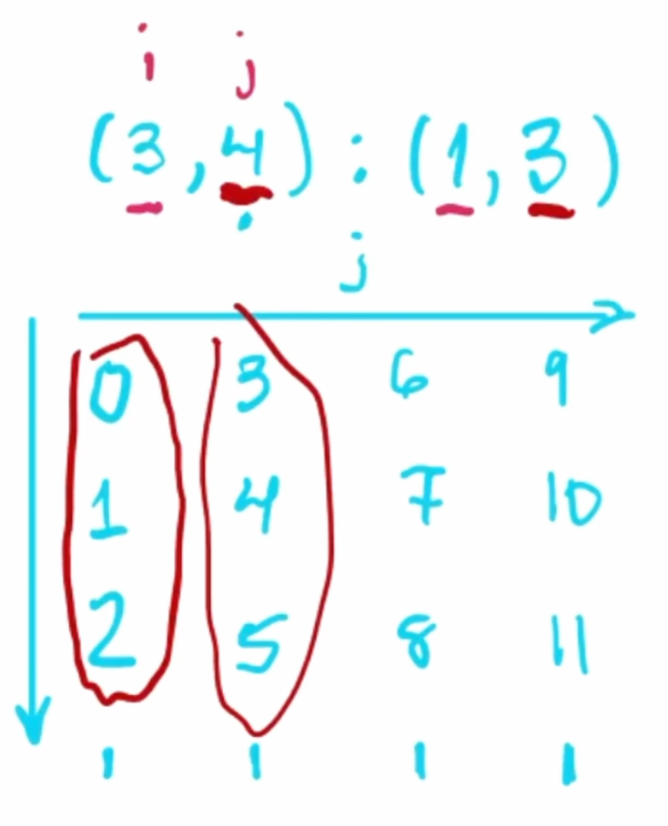
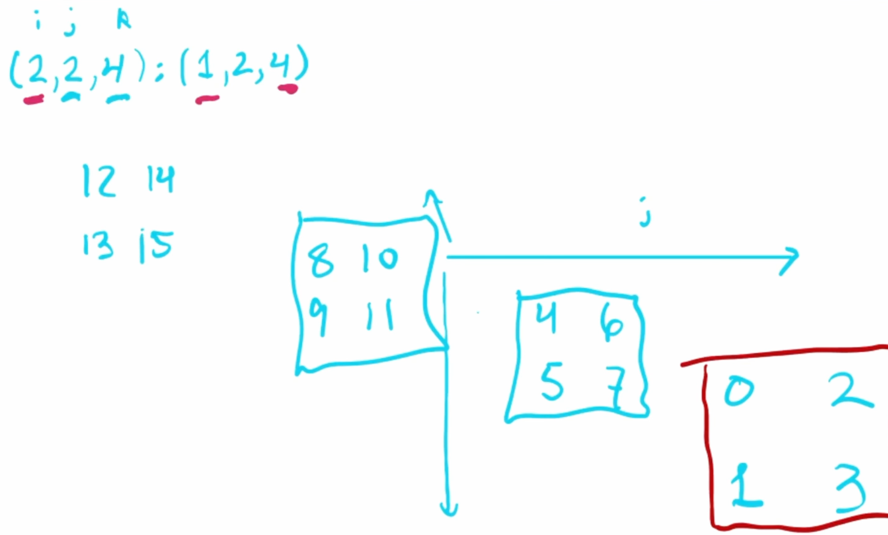
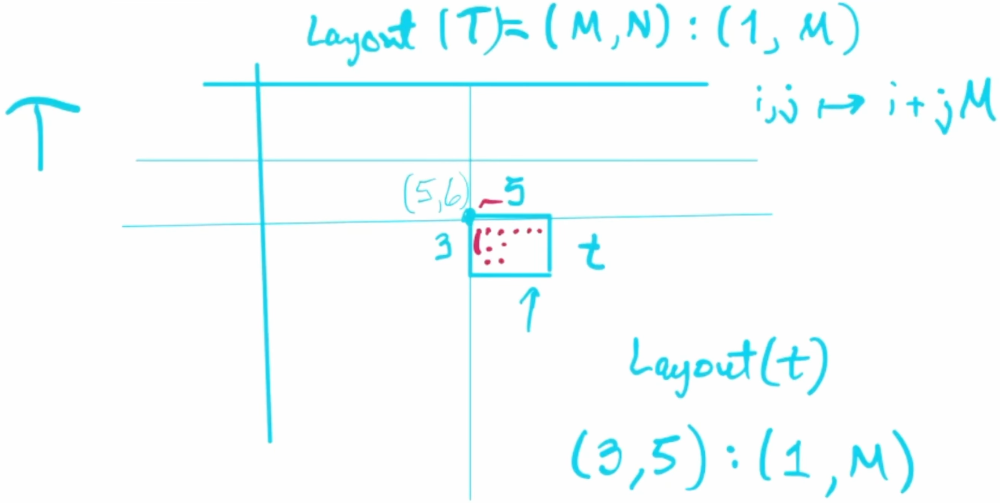

GPU MODE Lecture 15: CUTLASS
- GPU MODE Lecture Notes: My notes from the GPU MODE reading group lectures run by Andreas Kopf and Mark Saroufim.
- Introduction
- Notation Clarifications
- Tensors in Cutlass
- Layout and Coordinate Systems
- Sub-Tiles and Memory Organization
- Tiling
- CuTe Framework
- Practical Implementation and Usage
- YouTube Recording: Lecture 15: CUTLASS
Introduction
Talk Overview
- Speaker: Eric Auld
- Topic: Cutlass - NVIDIA’s CUDA Templates for Linear Algebra Subroutines
- Focuses on the conceptual understanding of Cutlass rather than the API specifics.
- Aims to help attendees loosen the lid and get started with learning Cutlass.
What is Cutlass
- Cutlass is a CUDA Templates for Linear Algebra Subroutines library developed by NVIDIA.
- GitHub Repository: NVIDIA/cutlass
- Authors: https://github.com/NVIDIA/cutlass/blob/main/CITATION.cff
- It provides low-level control over GPU computations, particularly for tensor core operations.
- Used for writing high-performance kernels for machine learning and linear algebra applications.
Why Learn Cutlass
Cutlass allows developers to spec out new machine learning models and test their performance.
It provides tools to make models performant by leveraging GPU capabilities directly.
Useful for exploring performance-oriented machine learning models that incorporate extensive linear algebra.
Understanding Cutlass is essential for working on performance-critical components like Flash Attention.
- GitHub Repository: Dao-AILab/flash-attention
- cutlass code: flash-attention/csrc
- GitHub Repository: Dao-AILab/flash-attention
Recognizing Cutlass Code
Indexing Conventions
- Cutlass uses round parentheses
()for indexing tensors, unlike the typical square brackets[]. - Uses underscores
_in indexing:- The underscore acts like the colon
:in Python for slicing. - Example:
some_tensor(_, 2)selects all elements in the first dimension and the third element in the second dimension.
- The underscore acts like the colon
Common Functions
- Greatest Hits Functions frequently seen in Cutlass code:
local_tilelocal_partitionpartition_Dpartition_S
- Underscore 3
_3:- Represents a static integer 3.
- The value is embodied in the type rather than the variable’s value.
- Used for compile-time constants.
Library Purpose and Context
Comparison with Other NVIDIA Libraries
- User-Friendly Libraries (Called from host):
- Device-Level Libraries:
When to Use Cutlass
- Primary Use Cases:
- For new ML models requiring performance optimization
- When exploring performance-oriented machine learning models with extensive linear algebra
- When requiring lower-level control than what CUDA BLAS (cuBLAS) provides
- For implementing and testing new model architectures
Notation Clarifications
Interval Notation
- Uses the following notation for intervals:
[i..j)represents the half-open interval fromitoj, includingibut excludingj.- Example:
[0..n)includes integers from0up to but not includingn.
Definition of Modes
- Mode:
- An element of a nested tuple.
- In a nested tuple of integers, each element (which could be a tuple itself) is called a mode.
- Important in the context of nested layouts in Cutlass.
Cutlass 3.0 (CuTe)
- CuTe refers to Cutlass 3.0, which introduced new tensor notation.
- Emphasizes nested structures and layouts for tensors.
Tensors in Cutlass
Engine (Pointer)
- The engine of a tensor represents the underlying memory pointer.
- It could be a pointer to global memory, shared memory, or other memory types.
Layout (Shape and Stride)
- A tensor’s layout consists of:
- Shape: Specifies the allowable input coordinates.
- Represented as nested integer tuples.
- Defines the dimensions of the tensor.
- Stride: Defines how to map coordinates to linear memory offsets.
- Also represented as nested integer tuples.
- Used in calculating the memory address for a given tensor coordinate.
- Shape: Specifies the allowable input coordinates.
Layout and Coordinate Systems
Mapping Coordinates to Linear Offsets
- In C-style indexing, linear offsets are calculated using strides:
- For a coordinate
(i, j), the offset isi + j * M. - For
(i, j, k), the offset isi + j * M + k * M * N.
- For a coordinate
- This can be represented as a dot product:
- Offset =
(i, j, k) • (1, M, M*N).
- Offset =
- The stride vector
(1, M, M*N)is used to map multi-dimensional indices to linear memory.
Shape and Stride Concepts
Shape Definition
- Specifies allowable input coordinates
- Uses upper bounds notation
- Example: Shape
(M, N, K)means:- i coordinates: [0, M)
- j coordinates: [0, N)
- k coordinates: [0, K)
Layout Notation
- Format:
shape:stride - Example:
(M,N,K):(1,M,MN)- Shape component:
(M,N,K) - Stride component:
(1,M,MN)
- Shape component:
Layout Concatenation
Basic Concatenation
- Can combine one-dimensional layouts
- Example:
(3:1,2:3) = (3,2):(1,3) - Benefits:
- More convenient representation
- Keeps corresponding shape and stride values closer together
Nested Layouts
Structure
- Flat Layout:
- All dimensions are at the same level.
- Coordinates are simple tuples.
- Example: Shape
(3, 4, 2), Stride(1, 3, 40).- Accepts coordinates like
(1,2,1)
- Accepts coordinates like
- Nested Layout:
- Dimensions are grouped into nested tuples.
- Coordinates are nested tuples.
- Example:
- Shape
((3,4),2). - Stride
(1,3),40).
- Shape
- The first mode is
(3,4), and the second mode is2. - Accepts coordinates like
((1,2),1)
Congruence Concept
- Congruent: Having the same nesting structure
- Requirements:
- Shape and stride must be congruent
- Coordinates must match the nesting structure
- Example:
- Nested layout accepts coordinate like
(1,2),1 - Flat layout accepts coordinate like
1,2,1
- Nested layout accepts coordinate like
Layout Visualization
Purpose
- Drawing layouts helps in visualizing and reasoning about tensor layouts.
- Not meant to provide rigorous definitions but to aid understanding.
Drawing Conventions
- Positive i direction: downward
- Positive j direction: rightward
- Starting point: always zero
- Compositional approach:
- Draw elements in first direction
- Replicate pattern for second direction
- Continue for additional dimensions
Example: Simple 2D Layout
Layout:
shape = (3, 4)stride = (1, 3)
Visualization:

- Along the
i(row) direction:- Elements at offsets
0,1,2
- Elements at offsets
- Along the
j(column) direction:- Each step increases the offset by
3(due to stride3).
- Each step increases the offset by
- The overall offsets for each element can be calculated and plotted.
- Along the
Example: 3D Layout
Layout:
shape = (2, 2, 4)stride = (1, 2, 4)
Visualization:
- Three dimensions:
i,j,k. - Elements are offset according to strides in each dimension.
- Helps in understanding complex memory layouts.
- Three dimensions:
Special Stride Types
Layout Left
- Generalized column-major ordering
- Stride calculation: Running prefix product from left
- Example for shape
(A,B,C,D):- Resulting stride:
(1,A,AB,ABC)
- Resulting stride:
Layout Right
- Generalized row-major ordering
- Stride calculation: Running prefix product from right
- Example for shape
(A,B,C,D):- Resulting stride:
(BCD,CD,D,1)
- Resulting stride:
Sub-Tiles and Memory Organization
Sub-Tile Concepts
Basic Properties of Sub-Tiles
- Shape: Different (smaller) than parent tensor
- Stride: Identical to parent tensor
- Base Pointer: Offset from parent tensor’s base
Sub-Tile Example

- Parent Tensor:
Twith shape(M, N)and layoutlayout_left(1,M) stride. - Sub-Tile:
twith shape(3, 5)at position (5,6). - Maintains parent stride (1,M)
- Base pointer offset calculation:
5*1 + 6*M
Understanding Nestedness
- Question: “Are you going to explain on an example what nestedness means?”
- Answer:
- Eric elaborated:
- Nested Tuples: Tuples where elements can themselves be tuples, forming a hierarchical or tree-like structure.
- Example:
- A nested layout:
((3, 4), 2):((1,3),12)- Coordinates accepted:
((i, j), k)
- Coordinates accepted:
- Flat layout:
(3,4,2):(1,3,12)
- A nested layout:
- Usage in Cutlass:
- Nested modes allow for logical subdivisions of tensors, which can represent different aspects like thread arrangements and value assignments.
- Helps in assigning threads to multi-dimensional data efficiently.
- Clarification:
- The nesting structure must be consistent across shape, stride, and the coordinates used.
- Nestedness facilitates operations where dimensions need to be grouped logically.
- Eric elaborated:
Q&A
Specifying Sub-Tiles in Tensors
- Question: “How do you tile a tensor in this example? How do you specify that capital
Tis broken down into lowercasets?” - Answer:
- Eric explained that tiling can be achieved using specific methods in Cutlass:
- Methods for Tiling:
with_shape: Adjusts the shape of a tensor while keeping the same stride, effectively creating a sub-tile.local_tile: Partitions a tensor into tiles for local computation.local_partition: Divides a tensor among threads or warps.- Composition:
- Using the compose function to combine layouts, treating them as functions.
- Allows creating sub-tiles by composing the parent tensor’s layout with the desired sub-tile layout.
- Methods for Tiling:
- Key Point:
- Sub-tiles share the same stride as the parent tensor but have different shapes and base pointers.
- The base pointer of a sub-tile is offset based on its position within the parent tensor.
- Eric explained that tiling can be achieved using specific methods in Cutlass:
Composition at Compile Time vs. Runtime
- Question: “Is adding composition of layouts adding some hardware overhead, or is it all at runtime or compile time?”
- Answer:
- Eric explained that it could be either, depending on the situation:
- Compile-Time Composition:
- If layouts are entirely static and composed of static integers (e.g.,
_3representing a static3), composition can occur at compile time. - Benefits include potential performance optimizations and early error detection.
- If layouts are entirely static and composed of static integers (e.g.,
- Runtime Composition:
- If layouts involve dynamic components (e.g., dimensions not known until runtime), composition must occur at runtime.
- Examples include large memory allocations where sizes aren’t predetermined.
- Compile-Time Composition:
- Implications:
- Compile-time composition can reduce overhead, but flexibility may require runtime handling.
- Developers can balance between performance and flexibility based on their needs.
- Eric explained that it could be either, depending on the situation:
Support for Negative Strides in Cutlass
- Question: “Is it allowed in Cutlass to use negative strides?”
- Answer:
- Eric confirmed that negative strides are allowed and elaborated:
- Usage:
- Negative strides enable traversal of tensors in reverse order along a dimension.
- Useful for operations like flipping tensors or accessing data in a non-standard sequence.
- Considerations:
- While powerful, using negative strides can be complex and requires careful handling to avoid errors.
- Example:
- A tensor with a negative stride in one dimension will decrement the memory offset when indexing along that dimension.
- Usage:
- Eric confirmed that negative strides are allowed and elaborated:
Non-Contiguous Layouts
- Definition:
- Layouts where elements are not stored in contiguous memory locations.
- Example:
- Stride with Gaps:
shape = (3)stride = (2)- Offsets:
0,2,4(skipping memory locations).
- Stride with Gaps:
Multiple Sub-Tiles
Common Properties
- All sub-tiles of same size have:
- Identical shape
- Identical stride
- Different base pointers
Distinguishing Features
- Only differ in base pointer offset
- Each maintains parent tensor’s memory layout pattern
- Base pointer calculation uses parent tensor’s layout
Memory Management
Tensor Components Review
- Engine (pointer/memory):
- Base pointer location
- Memory type (shared, global, etc.)
- Layout:
- Shape (dimensions)
- Stride (memory pattern)
Bounds Checking
- Cutlass performs bounds checking
- Many checks possible at compile time due to static integers
- Type system encodes layout information
Tiling
Tiling Operations
Basic Tiling Structure
- Division of larger tensor into smaller parts
- Two components:
- Outer Part: Which tile we’re examining
- Inner Part: Which element within the tile
Mathematical Representation
For tensor size A×B×C tiled by a×b×c: - Outer dimensions: (A/a) × (B/b) × (C/c) - Inner dimensions: a × b × c
Partial Tiling
Mode-Specific Tiling
- Can tile specific dimensions while leaving others untouched
- Example tiling modes A and C:
- Outer part:
(A/a) × B × (C/c) - Inner part:
a × 1 × c
- Outer part:
Compute Resource Tiling
Purpose
- Maps both data and compute resources
- Common in accelerator operations
- Example: Tensor core operations requiring specific thread counts
Components to Tile
- Compute Resources:
- Thread arrangements
- Warp-level operations
- Data Structures:
- Memory layouts
- Access patterns
Layout Division and Composition
Shape Division Concepts
Notation:
Uses circle-slash symbol (⊘) to represent division-like operation
Format:
BigShape ⊘ SmallShape
Convention Rules:
First Mode (Inner):
- Represents elements within a tile
- Answers “which element in the tile?”
- Second Mode (Outer):
- Represents tile identification
- Answers “which tile?”
Leftover Modes:
- Placed in outer part
- Represents untiled dimensions
Layout Division Implementation
Example with Layout Left:
- Original Shape:
(ABC) - Original Stride:
(1, A, AB) - Dividing Shape:
(a, b, c)
- Original Shape:
Results in Two Parts:
- Inner Part (Subtile):
- Shape:
a, b, c - Stride: Same as original
(1, A, AB)
- Shape:
- Outer Part (Tile Selection):
- Shape:
A/a, B/b, C/c - Stride: Original stride × small shape size
- Calculation:
(1×a, A×b, AB×c)
- Shape:
- Inner Part (Subtile):
Example of Tiling
- Original Shape:
(M, N) - Tile Shape:
(m, n) - Outer Shape:
(M/m, N/n) - Inner Shape:
(m, n) - Inner Stride: Same as original stride.
- Outer Stride:
- Calculated as:
(1 * m, M * n)
- Calculated as:
CuTe Framework
Overview and Context
Timeline and Integration
- Introduced with Cutlass 3.0
- Released: Late 2022
- Integrated with Hopper architecture features
Framework Components
- Layout algebra
- Tensor operations
- Shape manipulation
- Memory management
Layout Algebra Concepts
Core Operations
- Composition:
- Combines two layouts
- Used for creating subtiles
- Product Types:
- Different flavors of layout multiplication
- Includes “ranked product”
- Division Operations:
- Various forms of layout division
- Used in tiling operations
Implementation Details
Memory Types
- SMEM Pointer: Shared memory reference
- GMEM Pointer: Global memory reference
Static vs Dynamic Elements
- Static Elements:
- Known at compile time
- Uses underscore notation (e.g.,
_3) - Enables compile-time optimizations
- Dynamic Elements:
- Determined at runtime
- Example: Input tensor dimensions
Library Architecture
Directory Structure
Include Directory:
- Core library components
- Header-only implementation
Arch and Atom Directories:
archDirectory:- Contains architecture-specific implementations.
- Includes tensor core operations using inline assembly.
atomDirectory:- Contains abstractions over the architecture-specific implementations.
- Provides templated structures for different operations.
Architecture-Specific Code:
- Organized by compute capability
- Examples:
- SM80 (Ampere)
- SM90 (Hopper)
Operations Categories:
Copy operations
Matrix Multiply Accumulate (MMA)
Additional linear algebra operations
Inline Assembly:
Low-level code directly interacts with GPU tensor cores.
Example operation:
SM80_16x8x4_F32TF32TF32F32_TNfor matrix multiplication.// MMA 16x8x4 TN struct SM80_16x8x4_F32TF32TF32F32_TN { using DRegisters = float[4]; using ARegisters = uint32_t[2]; using BRegisters = uint32_t[1]; using CRegisters = float[4]; CUTE_HOST_DEVICE static void fma(float & d0, float & d1, float & d2, float & d3, uint32_t const& a0, uint32_t const& a1, uint32_t const& b0, float const & c0, float const & c1, float const & c2, float const & c3) { #if defined(CUTE_ARCH_MMA_SM80_ENABLED) asm volatile( "mma.sync.aligned.m16n8k4.row.col.f32.tf32.tf32.f32 " "{%0, %1, %2, %3}," "{%4, %5}," "{%6}," "{%7, %8, %9, %10};\n" : "=f"(d0), "=f"(d1), "=f"(d2), "=f"(d3) : "r"(a0), "r"(a1), "r"(b0), "f"(c0), "f"(c1), "f"(c2), "f"(c3)); #else CUTE_INVALID_CONTROL_PATH("Attempting to use SM80_16x8x4_F32TF32TF32F32_TN without CUTE_ARCH_MMA_SM80_ENABLED"); #endif } };
Template Specializations:
- Operations are templated based on data types and compute capabilities.
- Allows for compile-time dispatch to appropriate implementations.
Q&A
Availability Across Different GPUs
- Question: “Is this only available for Hopper, or can it also be used for other GPUs? The architectures look as if older GPUs would also be supported.”
- Answer:
- Eric confirmed that Cutlass supports multiple GPU architectures:
- Supported Architectures:
- While Cutlass provides extensive support for newer architectures like Hopper (SM90), it also supports older GPUs such as Ampere (SM80) and Volta (SM70).
- Extent of Support:
- Newer architectures have more features and optimizations available.
- Some functionalities may have limited support or performance on older GPUs.
- Implications for Developers:
- Developers can use Cutlass across different GPU generations but should be aware of the available features and potential limitations on older hardware.
- Supported Architectures:
- Eric confirmed that Cutlass supports multiple GPU architectures:
Operations Beyond Matrix Multiplication
- Question: “Is Cutlass mostly about copy and matrix multiplications, or are there other linear algebra operations, like inversion of a matrix?”
- Answer:
- Eric explained that while Cutlass focuses on fundamental operations, it is not limited to matrix multiplication:
- Available Operations:
- Cutlass supports a variety of tensor operations, including convolutions and reductions.
- It provides the building blocks for more complex algorithms.
- Advanced Linear Algebra:
- For higher-level operations like matrix inversion or solving linear systems, libraries like cuBLAS or cuSOLVER might be more appropriate.
- Use Cases:
- Cutlass is ideal for developers needing low-level control to implement custom algorithms or optimize specific operations not covered by higher-level libraries.
- Available Operations:
- Eric explained that while Cutlass focuses on fundamental operations, it is not limited to matrix multiplication:
Practical Implementation and Usage
Matrix Multiplication Implementation
SGEMM (Single Precision General Matrix Multiply)
- Source Code: examples/cute/tutorial/sgemm_1.cu
- Name Convention Origin:
- S: Single precision
- GE: General (dense matrices, no special structure)
- MM: Matrix Multiplication
Function Parameters
gemm(transA, transB, m, n, k,
alpha,
d_A.data().get(), ldA,
d_B.data().get(), ldB,
beta,
d_C.data().get(), ldC);// Common parameters
trans_a // Matrix A transpose flag
trans_b // Matrix B transpose flag
lda // Leading dimension of matrix A
alpha // Scalar multiplier
beta // Scalar multiplier for accumulation- General Operation Form:
D = alpha * (A * B) + beta * C
Memory Management Features
Example Code Structure
Basic Include Pattern
#include <cute/tensor.hpp>Tensor Creation
// Creating tensors
make_tensor()
make_layout()
make_coord()I’m Christian Mills, a deep learning consultant specializing in practical AI implementations. I help clients leverage cutting-edge AI technologies to solve real-world problems.
Interested in working together? Fill out my Quick AI Project Assessment form or learn more about me.